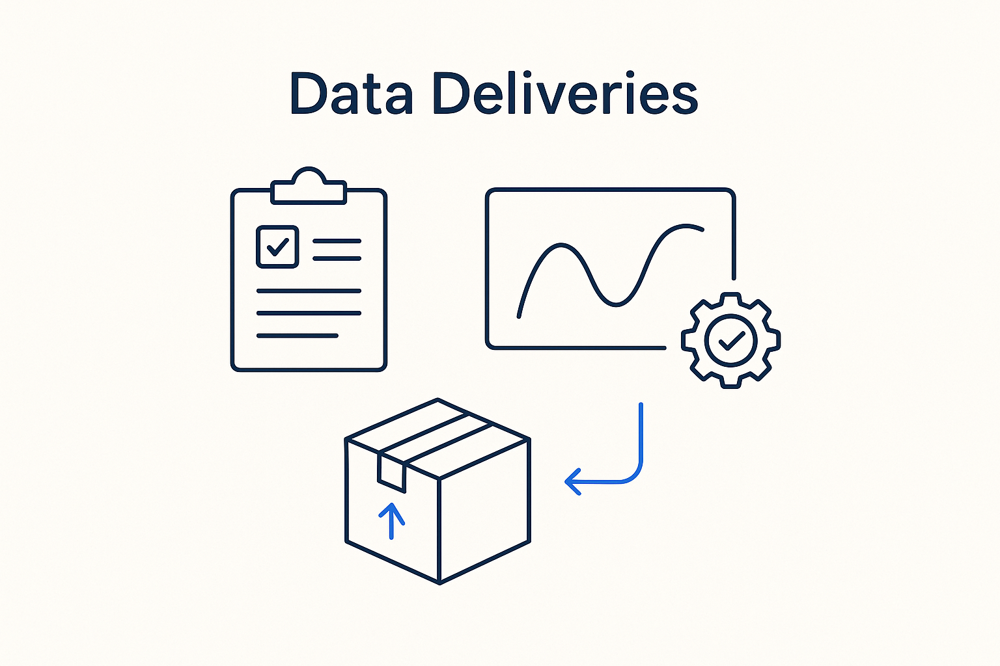

Model the expected deliveries — what, when, in what form — together with the quality metadata the provider ships alongside: the results of their own DQ and plausibility checks.

> Model the expected deliveries — what, when, in what form — together with the quality metadata the provider ships alongside: the results of their own DQ and plausibility checks.
A data delivery is a concrete hand-off: this dataset, arriving from that system, in this shape, at this time. Modeling deliveries means the *expectation* is explicit — the consumer knows what should arrive and when — so a missing or malformed delivery is a detectable event, not a surprise discovered three steps later. Expected deliveries are the unit that makes “the data is late” or “the data is wrong” a fact the system can state on its own.
The important move is that a delivery carries quality metadata from the provider. The producer runs its own data-quality and plausibility checks and ships the *results* alongside the data: row counts, check outcomes, known gaps, confidence. The consumer no longer has to guess whether the data is trustworthy — the provider says so, in machine-readable form, and stands behind it. Quality becomes part of the delivery, not an afterthought at the receiving end.
Deliveries sit inside their contract and along their calendar: the contract says what’s allowed, the calendar says when it’s due, and the delivery is the actual event with its quality attached. Modeled together, the whole flow between systems becomes observable and accountable.
Where it lives: the delivery layer of Breakthrough Modeling — the expected hand-off, with quality shipped alongside.